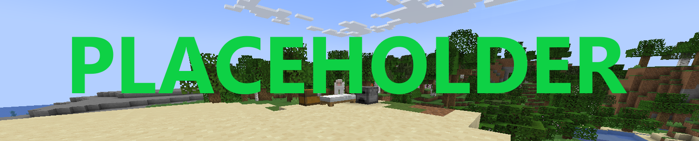

Changelog
NOTE: Unlike 8x8, this project started on github, so there are no update numbers, changes are listed sequentially & in category by date.
Jump to:
May 9
th
, 2025
May 9
th
, 2025
- Added pack.mcmeta
- Added _changelog.html